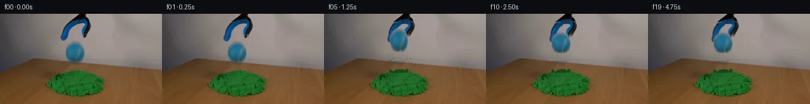

![首帧]()

Round 00
2026-11-05T04:35:25.630987+00:00像素候选变化代码 +280/−0inspection 更新
pixels 427e95a193e19bc9 · code 1fce1b6f840f8ef8
查看本轮 generate.py 真实 diff
--- previous/generate.py
+++ current/generate.py
@@ -0,0 +1,280 @@
+"""PixelWorld-Text case_0018: blue tennis ball released from a blue-black
+grabber claw onto a pile of green kinetic sand.
+
+Local pixel operations only:
+ * soft-alpha sprite extraction from frame 0 (chroma/luminance keying),
+ * background reconstruction by per-row linear interpolation + seeded noise,
+ * affine rotation / translation / one-frame squash of the sprites,
+ * analytic constant-acceleration ballistics for ball and sand grains,
+ * sampled-texture painting of the displaced sand rim / contact shadow.
+Frame 00 is written byte-identical to first_frame.png.
+"""
+from pathlib import Path
+import numpy as np
+from PIL import Image, ImageDraw
+from scipy import ndimage
+import cv2
+
+from artifact_io import save as artifact_save
+
+CASE = Path(__file__).parent
+rng = np.random.default_rng(1801)
+
+# ---------------------------------------------------------------- geometry
+F0 = np.array(Image.open(CASE / "first_frame.png").convert("RGB"))
+H, W = 144, 256
+R, G, B = (F0[:, :, i].astype(int) for i in range(3))
+
+green0 = (G > 85) & (G > R + 12) & (G > B + 8)
+blue = (B > 80) & (B > R + 15) & (B >= G - 10)
+lab, ncomp = ndimage.label(blue)
+comps = {}
+for i in range(1, ncomp + 1):
+ ys, xs = np.where(lab == i)
+ comps[i] = (len(xs), xs.mean(), ys.mean())
+ball_lbl = max(comps, key=lambda k: comps[k][2]) # lowest centroid
+rest = [k for k in comps if k != ball_lbl]
+larm_lbl = min(rest, key=lambda k: comps[k][1]) # left centroid
+rarm_lbl = max(rest, key=lambda k: comps[k][1]) # right centroid
+ball_core = lab == ball_lbl
+l_blue, r_blue = lab == larm_lbl, lab == rarm_lbl
+
+PIVOT = (122.0, 10.0)
+BALL_CX, BALL_CY = 118.0, 61.0
+
+# ------------------------------------------------------------- alpha sprites
+def soft_alpha(core, feather=0.6):
+ a = cv2.GaussianBlur(core.astype(np.float32), (0, 0), feather)
+ return np.clip(a, 0, 1)
+
+# ball: force full opacity on the detected core (keeps dark seam pixels),
+# chroma key fills 1-2 px of anti-aliased rim inside a dilated footprint.
+foot = ndimage.binary_dilation(ball_core, iterations=2)
+chroma = np.clip((B - np.maximum(R, G) + 12) / 28.0, 0, 1)
+ball_hard = ball_core.copy()
+rim_zone = foot & ~ball_core
+ball_hard[rim_zone] = chroma[rim_zone] > 0.45
+ball_alpha = np.where(ball_core, 1.0, np.where(rim_zone, chroma, 0.0))
+ball_alpha = np.clip(cv2.GaussianBlur(ball_alpha.astype(np.float32), (0, 0), 0.6), 0, 1)
+
+# fingers: dilated blue plates plus adjacent black rims; head/rod excluded.
+tool_dark = (R < 75) & (G < 80) & (B < 95)
+l_hard = ndimage.binary_dilation(l_blue, iterations=3) & (np.arange(W)[None, :] <= 120)
+l_hard &= (np.arange(H)[:, None] >= 13)
+l_hard |= (l_hard & tool_dark)
+l_hard = ndimage.binary_closing(l_hard, iterations=1)
+r_hard = ndimage.binary_dilation(r_blue, iterations=3) & (np.arange(W)[None, :] >= 124)
+r_hard &= (np.arange(H)[:, None] >= 11)
+r_hard |= (r_hard & tool_dark)
+r_hard = ndimage.binary_closing(r_hard, iterations=1)
+l_alpha = soft_alpha(l_hard)
+r_alpha = soft_alpha(r_hard)
+
+# --------------------------------------------- background behind moving parts
+bg_mask = foot | l_hard | r_hard
+base = F0.copy()
+yy, xx = np.mgrid[0:H, 0:W]
+filled = np.zeros((H, W), bool)
+for y in range(H):
+ m = bg_mask[y]
+ if not m.any():
+ continue
+ d = np.diff(np.r_[0, m.view(np.int8), 0])
+ starts = np.flatnonzero(d == 1)
+ ends = np.flatnonzero(d == -1)
+ for s, e in zip(starts, ends): # run [s, e)
+ if s == 0 or e == W:
+ continue
… diff truncated; 193 more lines …